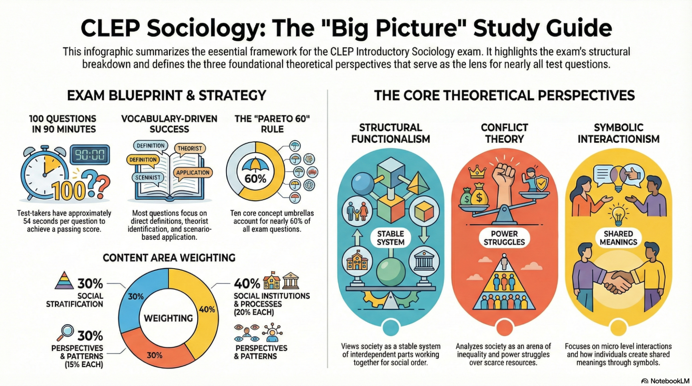

CLEP INTRODUCTORY SOCIOLOGY

How To Use This Guide
This is your only study resource for the CLEP Introductory Sociology exam. It is designed to take you from zero knowledge to a passing score in:
- 1‑week cram (high intensity), or
- 1‑month deep dive (lighter daily sessions).
Study Protocol
- Read each module like a textbook chapter
Do not skim the bold terms. CLEP question stems and answer choices often copy textbook-style language. - After each major section, pause and explain it in your own words
If you can teach it out loud to an imaginary student, you probably own it. - Do the self-check questions under light time pressure
Aim for about 45–60 seconds per item—similar to the real exam pace. - Maintain a running “weak list”
Any term, theorist, or concept you miss goes into a separate doc or notebook.
Review your weak list daily. Erase items only when you get them right several times in a row. - Use the visual suggestions
When the guide suggests, quickly sketch the diagram (e.g., three main perspectives triangle, demographic transition stages). Visual memory is powerful.
Official Exam Overview & Content Breakdown
The CLEP Introductory Sociology exam corresponds to a one‑semester college course in introductory sociology.
- About 100 multiple-choice questions
- 90 minutes testing time
- Most colleges grant 3 credits for a passing score (often 50)
College Board Content Outline & Weighting
# | Content Area | Approximate Weight |
1 | The Sociological Perspective | 15% |
2 | Social Institutions | 20% |
3 | Social Patterns (demography, community) | 15% |
4 | Social Processes (culture, deviance, etc.) | 20% |
5 | Social Stratification (process & structure) | 30% |
All questions assume intro-level understanding—no advanced quant beyond basic correlation vs causation and simple tables/graphs.
Reddit Intelligence: Recent Test‑Taker Patterns
Summarized from multiple r/CLEP posts where students passed Intro Sociology.
Question Styles
- Often rated as one of the more straightforward CLEPs, if you know the vocabulary and classic theories.
- Mix of:
- Direct definition items (e.g., folkways vs mores vs laws, role conflict vs role strain).
- Scenario-based application, especially for theories and research methods.
- Theorist ID (Durkheim, Marx, Weber, Mead, Du Bois, Martineau, Spencer, Mills, etc.).
- Some simple table/graph interpretation (demography, population trends).
Resources Students Actually Used
- Modern States Introductory Sociology course
- Quizlet sets labeled “CLEP Introductory Sociology” or similar (300–600 terms)
- Peterson’s practice tests, REA, and other online practice exams (often slightly harder than the real thing)
Commonly-Reported Heavy Areas
- The Big Three perspectives + feminist theory
- Founders and key sociologists
- Culture & norms – folkways, mores, laws, sanctions, ethnocentrism, cultural relativism
- Deviance & social control – labeling, strain/anomie, differential association
- Stratification & mobility – especially class, race/ethnicity, gender
- Family & marriage patterns
- Demography & urbanization
Most-Tested Vocabulary Clusters (Checklist)
Use this section as a master checklist. You should be able to:
- Define each term
- Recognize a textbook example
- Correctly pick it out in scenario questions
1. Sociological Perspective & Methods
- Sociology, sociological imagination, social facts, social structure, social institutions
- Structural functionalism, conflict theory, symbolic interactionism, feminist theories
- Population vs sample, random sample, independent vs dependent variable
- Correlation vs causation, reliability, validity
- Survey, experiment, participant observation, ethnography, secondary analysis, content analysis
- Research ethics: informed consent, confidentiality, minimize harm
2. Culture & Socialization
- Culture, material vs nonmaterial culture
- Norms, folkways, mores, laws, sanctions
- Values, beliefs, symbols, language; Sapir–Whorf hypothesis
- Subculture, counterculture; ethnocentrism vs cultural relativism
- Socialization, resocialization, anticipatory socialization
- Agents of socialization: family, school, peers, media, religion, workplace
- Cooley’s looking-glass self; Mead’s “I” and “Me,” generalized other
3. Groups, Organizations, Deviance
- Status (ascribed vs achieved); role; role conflict vs role strain
- Group, primary vs secondary group; in-group, out-group, reference group
- Formal organization, bureaucracy, hierarchy, division of labor, iron law of oligarchy
- Deviance, crime, social control, stigma
- Strain theory, differential association, labeling theory, control theory, anomie
4. Institutions
- Family, education, religion, economy, politics, health/medicine
- Manifest and latent functions, dysfunctions
- Patriarchy vs matriarchy, nuclear vs extended family, monogamy, polygyny, polyandry
- Tracking, hidden curriculum, credentialism, secularization
- Capitalism vs socialism vs mixed economy; traditional vs rational-legal vs charismatic authority
5. Stratification, Race, and Gender
- Social stratification, class, caste, estate systems
- Social mobility (intergenerational, intragenerational, horizontal, vertical, structural)
- Marx’s class conflict; Weber’s class–status–party
- Race vs ethnicity; majority vs minority group
- Prejudice, stereotype, discrimination (individual vs institutional)
- Assimilation, segregation, pluralism, genocide, population transfer
- Sex vs gender; gender roles, gender socialization, sexism, glass ceiling, patriarchy
6. Demography & Social Change
- Demography, fertility, mortality, migration; crude birth/death rates; population growth rate
- Demographic transition model (4 stages)
- Urbanization, suburbanization, gentrification
- Collective behavior; crowds, riots, rumors, fads, fashions
- Social movements (reform, revolutionary, redemptive, alternative); stages of movements
- Modernization, globalization
The Pareto 60: Ten High-Yield Concept Umbrellas
These 10 umbrellas likely account for 40–60% of exam questions, directly or through scenarios:
- The Big Three Perspectives – functionalism, conflict, symbolic interactionism (+ feminist perspectives)
- Research Methods & Causation vs Correlation
- Culture, Norms, and Values
- Socialization & Theories of the Self
- Groups, Networks, and Bureaucracy
- Deviance & Social Control
- Stratification & Social Class
- Race & Ethnicity and Majority–Minority Relations
- Gender, Family, and Marriage Systems
- Demography, Urbanization, and Social Movements
If you can confidently teach these ten categories, you are in strong position to pass.
MODULE 1 – The Sociological Perspective (≈15%)

1.1 What Is Sociology?
- Sociology – the systematic, scientific study of human society and social behavior.
- Focuses on patterns (social structure) and institutions rather than isolated individuals.
The Sociological Imagination (C. Wright Mills)
- Ability to link personal troubles (e.g., job loss) with public issues (e.g., factory closures, recession).
- Helps you see how history and social structure shape individual lives.
Exam signal words: “public issues vs private troubles,” “broader social context,” “connecting biography and history.”
1.2 Major Theoretical Perspectives
You will constantly be asked: “According to which theoretical perspective…?”
1. Structural Functionalism (Durkheim, Parsons, Merton)
- Sees society as a complex system whose parts work together to promote order and stability.
- Focuses on:
- Functions – positive contributions of institutions (e.g., family socializes children).
- Dysfunctions – negative consequences that disrupt stability (e.g., crime).
Exam signal words:
“stability,” “function,” “interdependent parts,” “social order,” “institutional roles.”
2. Conflict Theory (Marx, Weber, Mills)
- Sees society as an arena of inequality, competition, and power struggles over scarce resources.
- Emphasizes class, race, gender, and other inequalities.
- Law, education, religion, and politics are often seen as tools of the powerful.
Exam signal words:
“power,” “inequality,” “exploitation,” “oppressed vs dominant,” “elite,” “capitalist class.”
3. Symbolic Interactionism (Mead, Blumer, Goffman)
- Focuses on micro-level interactions and how people use symbols to create shared meanings.
- Reality is socially constructed through everyday interactions.
Exam signal words:
“interaction,” “symbols,” “shared meanings,” “definition of the situation,” “self-concept,” “microsociology.”
4. Feminist Perspectives
- Focus on gender inequality and how patriarchy is embedded in institutions.
- Often intersects with conflict theory (power and resources) but with central emphasis on gender.
Exam signal words:
“patriarchy,” “gender inequality,” “women’s experiences,” “gender oppression.”
CLEP Traps – Perspectives
- Questions about power and inequality almost never want “functionalism”—they usually want conflict or feminist.
- Questions about everyday meanings, symbols, labels, or self-identity almost always want symbolic interactionism, not “cognitive” (that’s psychology language).
1.3 Founders and Key Sociologists
Link each name with a keyword:
- Auguste Comte – coined sociology, positivism (using science to study society).
- Emile Durkheim – social facts, study of suicide, anomie, functionalism.
- Karl Marx – class conflict, bourgeoisie vs proletariat, critique of capitalism.
- Max Weber – verstehen (interpretive understanding), bureaucracy, rationalization, Protestant ethic.
- Harriet Martineau – early feminist sociologist, translated Comte, wrote on gender and slavery.
- W.E.B. Du Bois – race relations, double consciousness, NAACP co-founder.
- Herbert Spencer – social Darwinism, “survival of the fittest” in society.
- George Herbert Mead – symbolic interactionism, development of self, “I” and “Me.”
- C. Wright Mills – sociological imagination, power elite.
- Thorstein Veblen – conspicuous consumption.
1.4 Self-Check – Sociological Perspective
Questions
- A study argues that the legal system is structured to favor corporate interests over the poor. Which perspective is being used?
- A researcher analyzes how engagement rings symbolize commitment and affect how others treat engaged couples. Which perspective?
- A sociologist examines how education, religion, and family contribute to maintaining social order. Which perspective?
- Which theorist is most closely associated with anomie and the study of suicide rates?
- Which sociologist emphasized verstehen, or interpretive understanding of social action?
Answers
- Conflict theory
- Symbolic interactionism
- Structural functionalism
- Emile Durkheim
- Max Weber
MODULE 2 – Sociological Research Methods

2.1 Basic Research Concepts
- Population – entire group of interest (e.g., all U.S. adults).
- Sample – subset actually studied.
- Random sample – each member of population has equal chance of selection.
- Independent variable (IV) – presumed cause; what is manipulated or categorized.
- Dependent variable (DV) – presumed effect; what is measured.
- Correlation – two variables change together (positive or negative).
- Causation – change in one variable produces change in another, holding others constant.
Key idea: Correlation ≠ causation. Both variables could be affected by a third factor.
2.2 Major Research Methods
1. Survey Research
- Uses questionnaires or interviews to gather data from many people.
- Good for studying attitudes, opinions, self-reports.
Signal words:
“questionnaire,” “interview,” “national sample,” “poll,” “Likert scale.”
2. Experiments
- Manipulate an independent variable and observe effect on a dependent variable.
- Use experimental group (receives treatment) and control group (no treatment/placebo).
- Random assignment to groups.
Signal words:
“manipulated,” “control group,” “randomly assigned,” “laboratory experiment.”
3. Participant Observation / Ethnography
- Researcher observes and often participates in a group’s everyday life.
- Produces in-depth, qualitative data.
Signal words:
“joined the group,” “field notes,” “observed rituals,” “ethnographic study.”
4. Secondary Analysis
- Uses existing data collected by others (census, surveys, records).
Signal words:
“census data,” “archival records,” “government statistics,” “previous surveys.”
5. Content Analysis
- Systematic analysis of texts or media (newspapers, TV, social media).
Signal words:
“coded TV shows,” “analyzed newspapers,” “counted frequency of themes/words.”
2.3 Research Ethics
- Informed consent – participants must know the nature of the study.
- Confidentiality – protect identities and data.
- Minimize harm – avoid unnecessary risk.
- Debriefing – explain any deception afterward.
2.4 Self-Check – Methods
Questions
- A sociologist mails questionnaires to 1,000 randomly selected adults asking about political attitudes. Method?
- A researcher lives among a remote tribe for one year, participating in daily activities and taking notes. Method?
- A lab study manipulates exposure to violent video games and measures later aggression. Method?
- A sociologist analyzes historical Census data on income inequality from 1950–2020. Method?
- In an experiment, what term describes putting participants into treatment or control using a coin flip?
Answers
- Survey research
- Participant observation / ethnography
- Experiment
- Secondary analysis
- Random assignment
MODULE 3 – Culture and Society (Social Processes, Part 1)

3.1 Elements of Culture
- Culture – shared beliefs, values, norms, and material objects that guide people’s lives.
- Material culture – physical objects (technology, clothing, tools, buildings).
- Nonmaterial culture – ideas, values, symbols, and norms.
3.2 Norms and Sanctions
- Norms – rules of behavior.
- Folkways – everyday customs; weak sanctions
- Example: dress styles, table manners.
- Mores – strongly held moral norms; violations seen as serious
- Example: cheating on a spouse (in many cultures), stealing.
- Laws – norms that are formally codified and enforced by the state.
- Sanctions – rewards or punishments for following/violating norms
- Formal (fines, awards) vs informal (praise, gossip, scowls).
Exam favorite: “Which is a folkway vs more vs law?”
3.3 Values, Beliefs, and Symbols
- Values – culturally defined standards about what is desirable, good, and beautiful (e.g., individualism).
- Beliefs – specific statements people hold to be true.
- Symbols – anything that carries a particular meaning recognized by people who share a culture (flags, religious icons).
Sapir–Whorf Hypothesis
- Language shapes perception of reality. Different languages may highlight different aspects of the world.
3.4 Subcultures, Countercultures, Ethnocentrism
- Subculture – group within a larger society with distinct values and norms (e.g., ethnic communities, gaming communities).
- Counterculture – subgroup that rejects and opposes key elements of the dominant culture (e.g., some extremist groups).
- Ethnocentrism – judging another culture by the standards of one’s own.
- Cultural relativism – judging a culture by its own standards, seeking to understand practices in context.
Trap:
“Thinks another culture’s eating habits are disgusting and primitive” → ethnocentrism, not cultural relativism.
3.5 Self-Check – Culture
Questions
- Wearing business attire instead of pajamas to a job interview is an example of following what kind of norm?
- A group that openly rejects mainstream values of materialism and lives in a self-sufficient commune is best described as a…?
- A student judges a remote tribe’s clothing as “barbaric” because it doesn’t match Western norms. What concept is illustrated?
- A nation’s belief that “hard work leads to success” is best described as a value or a belief?
- According to the Sapir–Whorf hypothesis, what shapes our perception of reality?
Answers
- Folkway
- Counterculture
- Ethnocentrism
- Value
- Language
MODULE 4 – Socialization and the Self (Social Processes, Part 2)

4.1 Socialization Basics
- Socialization – lifelong process through which people learn the norms, values, and behaviors appropriate to their society.
- Agents of socialization:
- Family
- School
- Peers
- Mass media
- Religion
- Workplace
Nature vs Nurture
- Sociology emphasizes nurture (social environment), recognizing that biology interacts with social influences.
4.2 Theories of the Self
Cooley’s Looking-Glass Self
- We imagine how we appear to others.
- We imagine others’ judgment of that appearance.
- We develop a self-concept based on this imagined judgment.
Mead’s “I” and “Me” and Stages of Self
- “I” – spontaneous, active, impulsive part of self.
- “Me” – socialized, reflective part that internalizes societal expectations.
Stages:
- Imitation stage – children mimic others.
- Play stage – take roles of “significant others” (e.g., parent, teacher).
- Game stage – understand multiple roles simultaneously.
- Generalized other – internalized sense of the expectations of society as a whole.
Resocialization
- Process of radically changing one’s values and behavior (e.g., military boot camp, prisons, religious conversions).
- Often occurs in total institutions that control all aspects of daily life.
4.3 Self-Check – Socialization
Questions
- Which theory describes how we form our self-concept based on how we think others see us?
- In Mead’s theory, which part of the self is spontaneous and un-socialized?
- A person enters the military and undergoes basic training that reshapes their attitudes and behavior. What process is this?
- Which agent of socialization is typically most influential early in life?
- When a child pretends to be a parent while playing house, which of Mead’s stages is this?
Answers
- Cooley’s looking-glass self
- The “I”
- Resocialization
- The family
- Play stage
MODULE 5 – Groups, Organizations, Deviance, and Social Control

5.1 Status, Role, and Social Structure
- Status – recognized social position.
- Ascribed status – given at birth (e.g., race, sex, birth family’s class).
- Achieved status – earned or chosen (e.g., occupation, education).
- Role – expected behavior attached to a status.
- Role conflict – conflict between roles of different statuses (e.g., parent vs employee).
- Role strain – conflict within one status (e.g., teacher must be both strict and supportive).
5.2 Groups and Organizations
- Group – two or more people who interact regularly and share identity.
- Primary group – small, personal, enduring relationships (family, close friends).
- Secondary group – larger, more impersonal, goal-oriented (co-workers, classmates).
- In-group – group we identify with; “us.”
- Out-group – group we feel hostility or competition toward; “them.”
- Reference group – group used as a standard for evaluating ourselves.
Formal Organizations & Bureaucracy (Weber)
- Formal organization – large, impersonal group organized to achieve goals (e.g., corporations, universities).
- Bureaucracy – hierarchical structure, specialization, rules, impersonality, merit-based hiring.
- Iron law of oligarchy – tendency for bureaucracies to be ruled by a small elite.
5.3 Deviance and Social Control
- Deviance – behavior that violates norms.
- Crime – deviance that breaks laws.
- Social control – mechanisms that promote conformity (laws, informal sanctions).
Theories of Deviance
- Functionalism (Durkheim) – deviance is normal and can:
- Clarify norms
- Increase group unity
- Promote social change
- Strain theory (Merton) – deviance results when people are unable to achieve culturally approved goals by approved means (innovation, ritualism, retreatism, rebellion).
- Differential association (Sutherland) – people learn deviance from friends/family who engage in it.
- Labeling theory – deviance results from being labeled deviant; labels influence self-concept (primary vs secondary deviance).
- Control theory (Hirschi) – strong bonds to society (attachment, commitment, involvement, belief) reduce deviance.
Exam Signal Words
- “Blocked opportunities,” “can’t achieve goals legally” → strain theory
- “Learned from peers/family,” “friends who steal” → differential association
- “Being labeled,” “internalizes deviant identity” → labeling theory
- “Weak bonds to society” → control theory
- “Clarifies moral boundaries,” “promotes social change” → functionalism
5.4 Self-Check – Groups & Deviance
Questions
- A nurse feels torn between following hospital policy and advocating for a patient’s wishes. Role conflict or role strain?
- A teenager learns techniques for shoplifting by hanging out with older thieves. Which deviance theory best explains this?
- A sociologist argues that deviance helps clarify norms and can promote needed social change. Which perspective?
- A large company with thousands of employees, rigid hierarchy, and written rules is an example of what kind of organization?
- A student is publicly labeled a “cheater” and then continues to cheat more often. Which theory explains this pattern?
Answers
- Role conflict
- Differential association
- Functionalism (Durkheim)
- Bureaucracy / formal organization
- Labeling theory
MODULE 6 – Social Institutions (≈20%)
Institutions are enduring, organized patterns of social relationships that meet basic social needs (family, education, religion, economy, politics, health).

6.1 Family
Functions:
- Reproduction and child-rearing
- Socialization of children
- Emotional support
- Regulation of sexual behavior
- Economic cooperation
Forms:
- Nuclear family – parents + children.
- Extended family – includes additional kin (grandparents, aunts, uncles).
- Monogamy – one spouse.
- Polygyny – one man, multiple wives.
- Polyandry – one woman, multiple husbands.
Patterns:
- Patriarchy – men dominate decision-making and power in the family.
- Matriarchy – women hold primary power (rare in practice).
- Trends: rising divorce, cohabitation, blended families, same-sex partnerships.
6.2 Education
Manifest functions:
- Teach knowledge and skills
- Cultural transmission
- Social integration (shared norms and values)
Latent functions:
- Childcare
- Peer networks and matchmaking
- Custodial care; keeping youths out of labor market
Key concepts:
- Tracking – placing students in different ability groups/tracks.
- Hidden curriculum – implicit lessons about obedience, punctuality, conformity.
- Credentialism – reliance on academic degrees as screening tools.
6.3 Religion
Functions:
- Provides meaning and purpose
- Promotes social cohesion and moral guidelines
- Can act as a form of social control
Concepts:
- Church – large, established religious organization.
- Sect – smaller, more emotional, often at odds with mainstream; offshoot of a larger tradition.
- Cult / New Religious Movement – new, unconventional religious group.
- Secularization – declining influence of religion in everyday life and institutions.
6.4 Economy & Work
- Capitalism – private ownership of production, profit motive, competition.
- Socialism – collective ownership, pursuit of collective goals, state coordination.
- Mixed economy – combines elements of both.
Related concepts:
- Division of labor
- Professionalization
- Deindustrialization and rise of service economy
6.5 Politics & Power
- Power – ability to achieve goals despite resistance.
- Authority – legitimate power.
Weber’s types of authority:
- Traditional – based on custom (e.g., monarchies).
- Charismatic – based on personal charm/heroism.
- Rational-legal – based on formal rules and laws (e.g., modern bureaucracies).
Political systems: democracy, authoritarianism, totalitarianism.
6.6 Health & Medicine
- Medicalization – process by which nonmedical problems become defined and treated as medical conditions (e.g., ADHD diagnosis).
- Health inequalities by class, race/ethnicity, gender.
6.7 Self-Check – Institutions
Questions
- A society where men make most major family decisions is best described as…?
- Requiring a bachelor’s degree for jobs that previously accepted a high school diploma is an example of…?
- A small religious group that split off from a large church and rejects many mainstream norms is called a…?
- Teaching reading and math skills is a manifest function or latent function of schools?
- Reframing certain behaviors (like hyperactivity) as disorders requiring medication is an example of what process?
Answers
- Patriarchy
- Credentialism
- Sect (or possibly cult, depending on description)
- Manifest function
- Medicalization
MODULE 7 – Social Stratification, Race, and Gender (≈30%)
This is the heaviest content area. Expect many questions.

7.1 Basics of Stratification
- Social stratification – hierarchical arrangement of large groups based on control of resources, power, and prestige.
Systems:
- Caste system – status ascribed at birth, little/no mobility.
- Class system – more open; achieved statuses matter, some mobility.
- Estate system – historically based on land ownership and feudal obligations.
Status consistency vs inconsistency:
- Status consistency – similar position on all three dimensions (class, status, power).
- Status inconsistency – high on one, low on another (e.g., rich but low-prestige job).
7.2 Marx vs Weber
Karl Marx
- Main divide between bourgeoisie (owners of production) and proletariat (workers).
- Emphasis on exploitation, alienation, and class conflict.
Max Weber
- Stratification is multidimensional:
- Class – economic position.
- Status – social honor, prestige.
- Party – power or influence in political organizations.
7.3 Social Class and Mobility
Rough U.S. classes (intro-level):
- Upper, upper-middle, lower-middle, working, lower.
Social mobility:
- Intergenerational mobility – differences between parents’ and children’s class positions.
- Intragenerational mobility – changes within one person’s lifetime.
- Horizontal mobility – change in position at same level (e.g., switch jobs, same status).
- Vertical mobility – move up or down class ladder.
- Structural mobility – large-scale changes due to societal shifts (e.g., decline of manufacturing).
7.4 Race and Ethnicity
- Race – socially constructed category based on perceived physical differences.
- Ethnicity – shared cultural heritage (language, ancestry, religion).
Minority & majority groups:
- Minority group – singled out for unequal treatment, often low power (not necessarily fewer in number).
- Majority/dominant group – holds most power and privilege.
Prejudice, stereotypes, discrimination:
- Prejudice – negative attitudes toward a group.
- Stereotype – oversimplified belief about a group.
- Discrimination – unequal treatment based on group membership.
- Institutional discrimination – built into social institutions (e.g., redlining in housing).
Patterns of intergroup relations:
- Genocide
- Population transfer
- Internal colonialism
- Segregation (de jure vs de facto)
- Assimilation (including forced assimilation)
- Pluralism (multiculturalism)
7.5 Sex, Gender, and Inequality
- Sex – biological differences.
- Gender – social roles and expectations associated with sex.
Key concepts:
- Gender roles, gender socialization
- Sexism
- Glass ceiling
- Patriarchy
- Feminist perspectives on inequality
7.6 Aging and Inequality
- Ageism – prejudice/discrimination based on age (often against older adults).
- How social class, race, and gender intersect with aging experiences.
7.7 Self-Check – Stratification, Race, Gender
Questions
- A person whose parents were factory workers becomes a doctor. This is an example of what kind of mobility?
- A landlord refuses to rent to people of a certain ethnicity, but says “I have nothing against them.” Is this prejudice or discrimination?
- A society where status is assigned at birth and mobility is almost impossible is what type of system?
- When a group maintains its distinct culture while having equal social standing with the dominant group, this pattern is called…?
- The belief that women are naturally less suited for leadership roles is an example of what?
- Which theorist emphasized that stratification involves class, status, and party?
Answers
- Intergenerational vertical mobility
- Discrimination (behavior)
- Caste system
- Pluralism (multiculturalism)
- Sexism (and a gender stereotype)
- Max Weber
MODULE 8 – Social Patterns and Demography (≈15%)

8.1 Demography Basics
- Demography – scientific study of population size, composition, and distribution.
- Key components:
- Fertility – births
- Mortality – deaths
- Migration – movement in/out
Rates:
- Crude birth rate – births per 1,000 people per year.
- Crude death rate – deaths per 1,000 people per year.
- Population growth rate – births − deaths + net migration.
8.2 Demographic Transition Model
Explains population change with industrialization:
- Stage 1 – High birth, high death → low growth.
- Stage 2 – High birth, declining death → rapid growth.
- Stage 3 – Declining birth, low death → slowing growth.
- Stage 4 – Low birth, low death → low or zero growth.
Visual suggestion:
Draw a graph with birth and death rates over four stages; note where rates diverge and converge.
8.3 Urbanization and Community
- Urbanization – movement from rural to urban living.
- Suburbanization – growth of areas outside city centers.
- Gentrification – middle/upper-class move into lower-income urban neighborhoods, raising property values and displacing original residents.
8.4 Self-Check – Demography
Questions
- A country with high birth and high death rates and little population growth is likely in which stage of the demographic transition?
- The shift of population from farms and villages to cities is called…?
- When a formerly low-income neighborhood becomes trendy and expensive, displacing long-term residents, this is known as…?
- The study of population size and characteristics is called…?
Answers
- Stage 1
- Urbanization
- Gentrification
- Demography
MODULE 9 – Social Change, Collective Behavior, and Social Movements

9.1 Collective Behavior
- Collective behavior – relatively spontaneous, unstructured social behavior of a group when norms are unclear or changing.
Examples:
- Crowds (protests, riots)
- Panics
- Rumors
- Fads and fashions
9.2 Social Movements
Types of social movements:
- Reform movements – seek to change a specific part of society (civil rights, environmental).
- Revolutionary movements – aim to change or replace the entire social system.
- Redemptive movements – aim for inner change in individuals (often religious).
- Alternative movements – seek limited change in specific behaviors (e.g., anti-smoking campaigns).
Stages of social movements (simplified):
- Emergence – problem is recognized.
- Coalescence – organization and strategy develop.
- Bureaucratization – movement becomes more formalized.
- Decline – success, failure, repression, or mainstream absorption.
9.3 Social Change
- Driven by technology, social movements, cultural diffusion, population changes, conflict, and environmental pressures.
- Modernization – process of social change begun by industrialization.
- Globalization – increasing interconnection of societies worldwide.
9.4 Self-Check – Social Change & Movements
Questions
- A movement that aims to overthrow the existing government and economic system is what type of movement?
- A campaign encouraging people to recycle more is what kind of movement?
- Wearing bell-bottoms one year and skinny jeans the next is an example of what (fad, fashion, or rumor)?
- The process of industrialization and the growth of mass media and bureaucracy is part of what larger process?
- When a movement transitions from loosely organized protests to a formal organization with paid staff, what stage is this?
Answers
- Revolutionary movement
- Alternative (or possibly reform if it targets broader policy/environment)
- Fashion (if long-lasting) or fad (if very short-lived trend)
- Modernization
- Bureaucratization stage
Exam Strategy & Study Plans
Time Management on Test Day
- ~100 questions in 90 minutes → about 54 seconds per question.
- First pass:
- Answer all easy/medium questions quickly.
- Mark harder or time-consuming items.
- Return to flagged questions.
- Use logic, elimination, and keyword triggers from this guide.
How to Attack Questions
- Spot perspective quickly – functionalism vs conflict vs interactionism vs feminist.
- Identify research method – experiment vs survey vs fieldwork vs secondary analysis.
- Use process of elimination – often 1–2 options are clearly off.
- Pay attention to qualifiers – “most likely,” “primary function,” “initial stage.”
1‑Week Cram Plan (High-Intensity)
Day 1–2 – Modules 1–3
- Big three perspectives + feminist
- Founders
- Basic methods
- Culture & norms (folkways, mores, laws, sanctions)
Day 3 – Modules 4–5
- Socialization, Cooley & Mead
- Groups and deviance theories
- Make a weak list and flashcards.
Day 4–5 – Modules 6–7
- Institutions (family, education, religion, economy, politics, health)
- Stratification, class, race, gender
- Extra reps on mobility, race vs ethnicity, prejudice vs discrimination.
Day 6 – Modules 8–9 + Practice Test
- Demography, urbanization, social change.
- Take at least one full practice test (Peterson’s, Modern States, etc.) timed.
- Carefully review every missed or guessed question.
Day 7 – Consolidation
- Re-read your weak list and key flashcards.
- Do a second, shorter timed set (40–60 questions).
- Light review; avoid cramming right up to test time if you can.
1‑Month Deep-Dive Plan (Low/Moderate Intensity)
- 30–60 min/day reading 1–2 sections of this guide.
- Create/develop flashcards for all bold terms.
- Short weekly self-quizzes from this guide.
- Focus on deviance, stratification, race, gender, and demography (the most heavily tested areas).
- One full-length practice test.
- Heavy review of flashcards and weak list.
- Two more timed practice sets.
- Final pass through self-check questions from all modules.
You can now use this document on its own or add images/diagrams and styling to match your Psychology guide.